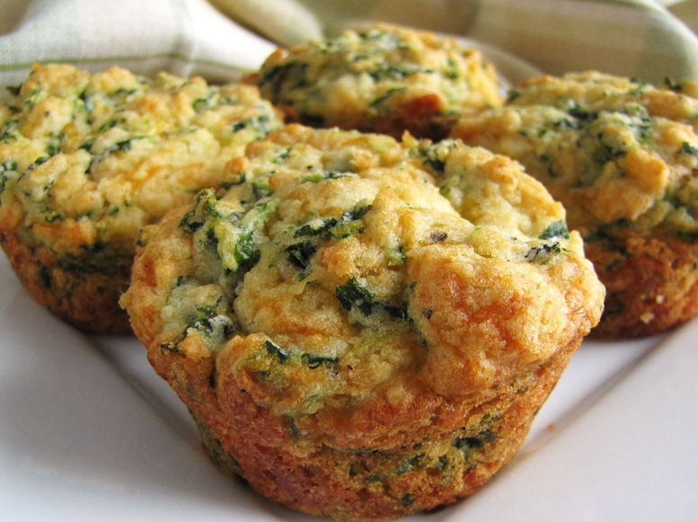

Camembert Muffins with Spinach Recipe

Description
A tasty, savoury muffin recipe that is a favourite of mine.
Makes 10.
Ingredients
- 200g flour
- 2 teaspoons baking powder
- 1/4 teaspoon salt
- 30g baby spinach leaves
- 150mls milk
- 150g camembert cheese
- butter for greasing muffin tray
Steps
- Preheat the oven to 220C, and grease a medium sized muffin tray with butter
- Sieve together the flour, baking powder, and salt into mixing bowl, then add spinach leaves
- Peel, then microwave the cheese for 1 minute to make cheese sauce
- Add the milk to the camembert cheese sauce, stir to combine, but don't overmix
- Combine the flour mixture with the cheese sauce mixture
- Spoon 10 portions into the muffin tray and bake for 10-15 minutes until golden